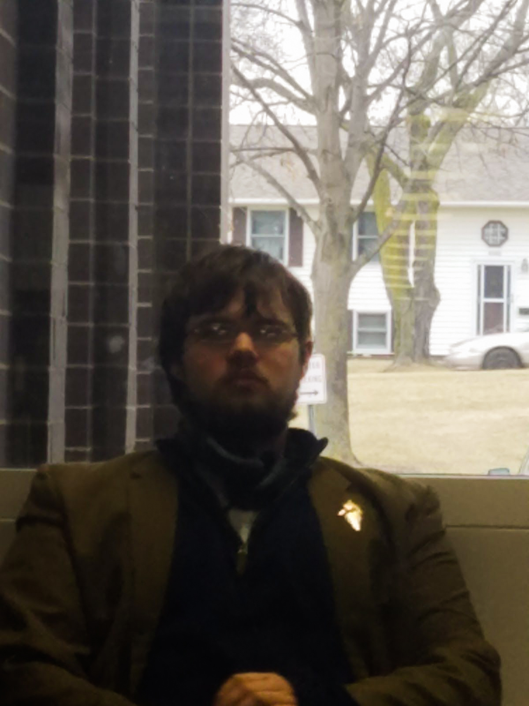
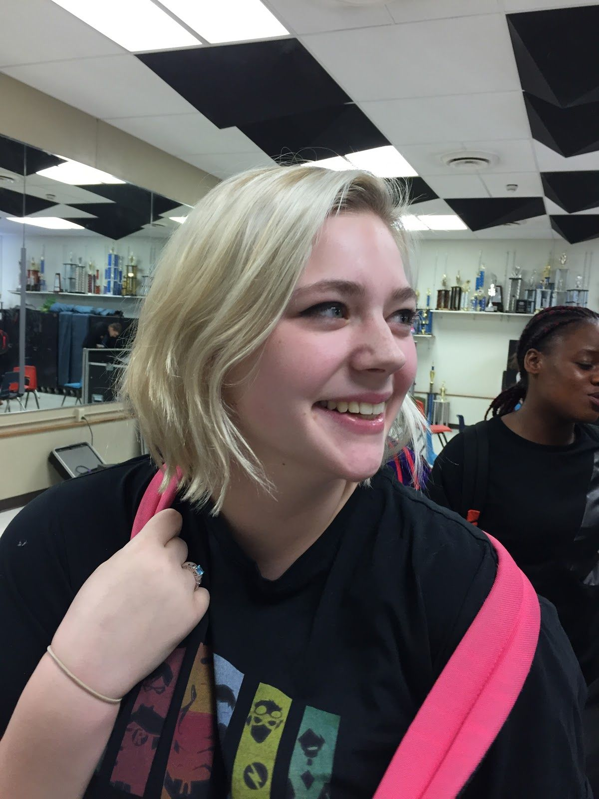
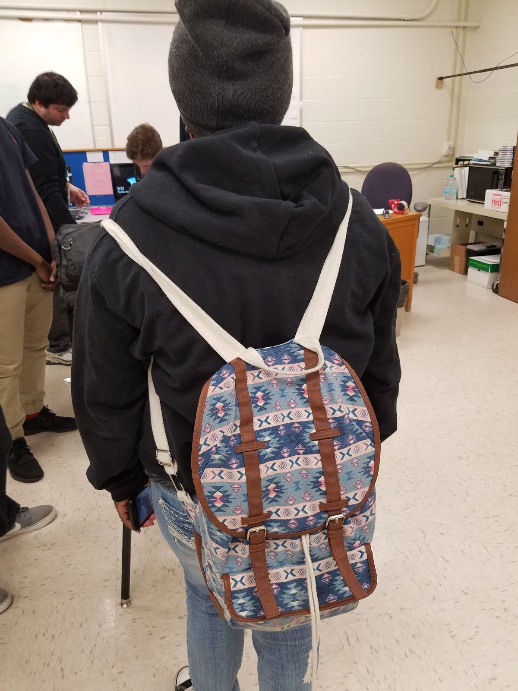
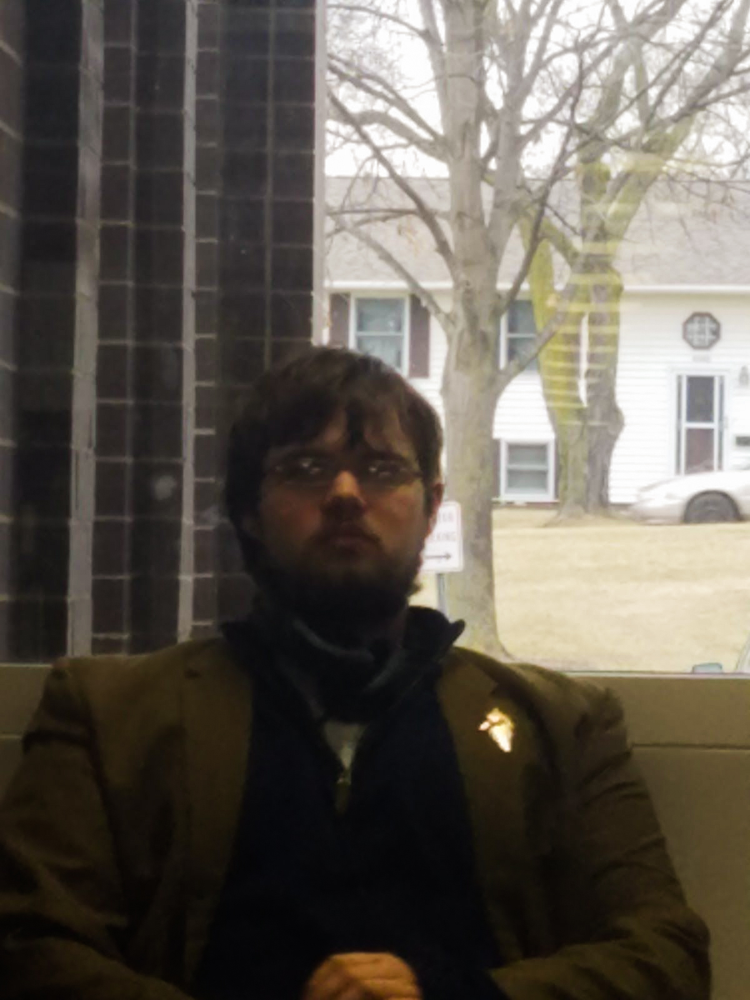
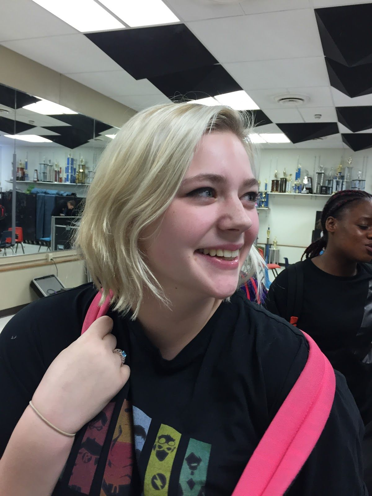
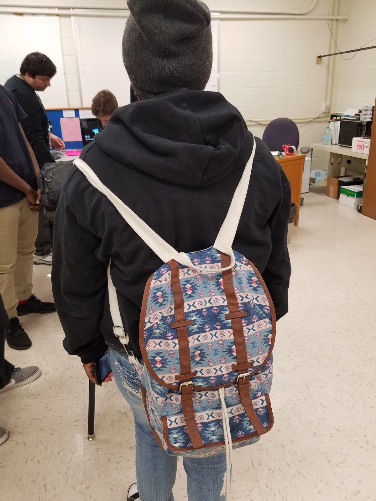

Picture N/A
Q: Are you in any activities?
A: Going to be in tennis
Q: Favorite thing about Kennedy?
A: I like how many classes they have to offer.
Q: What do you think about Kennedy as a whole?
A: I think its overpopulated and most problems can be solved if we weren’t
Q: Any other complaints about Kennedy?
A: Nothing other than that.
Q: What do you wish they would add or change?
A: I wish they would focus more on the arts
Maddie Vestweker
 




